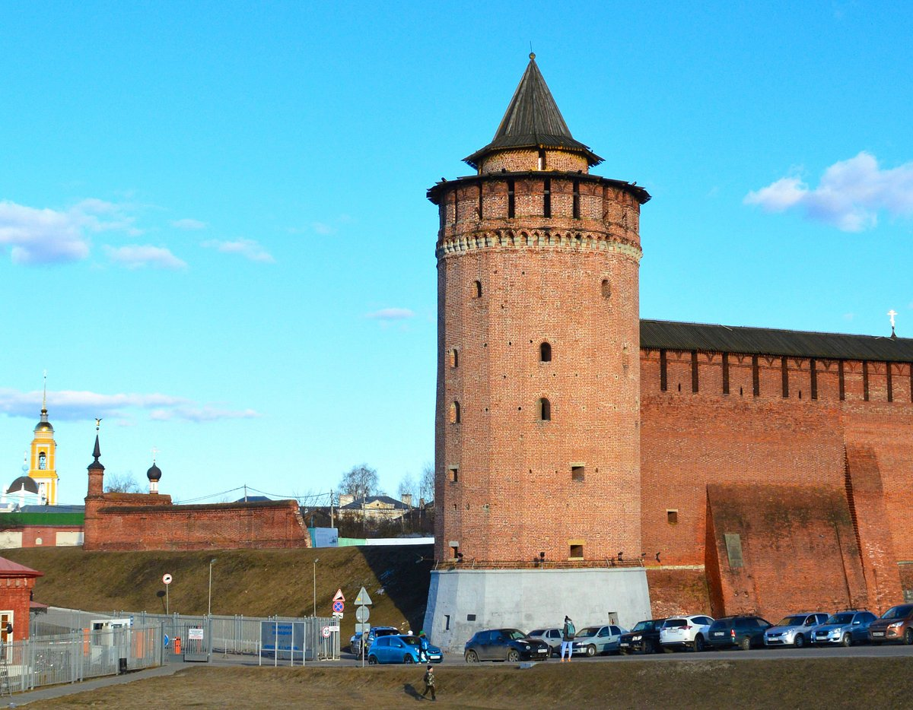

РЕДАКТОР — БЕЗ РАСПОЗНАВАНИЯ БАШНИ
Ручная подгонка · без автоматического трекинга

+
Инициализация Three.js...
Точка примыкания — нижняя точка стены у башни
3D-стена поверх фотографии или живой камеры. Здесь подгоняется 3D-стена к опорному фото. Для распознавания в камере открой страницу «Трекинг OpenCV».